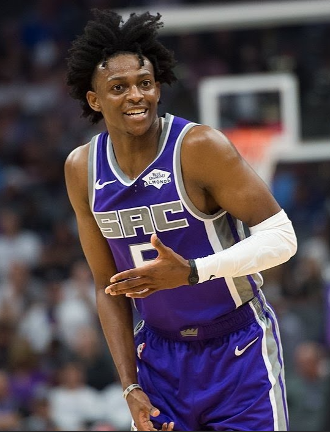

Kings

The Sacramento Kings are an American professional basketball team based in Sacramento, California. The Kings compete in the National Basketball Association (NBA) as a member of the Western Conference Pacific Division. The Kings are the only team in the major professional North American sports leagues located in Sacramento. The team plays its home games at the Golden 1 Center. Their best seasons to date in the city were in the early 2000s, including the 2001–02 season when they had the best record in the NBA at 61–21 (a winning percentage of .744). The franchise began with the Rochester Seagrams (a semi-professional team) from Rochester, New York, that formed in 1923 and hosted a number of teams there over the next 20 years. They joined the National Basketball League in 1945 as the renamed Rochester Royals, winning that league's championship in their first season, 1945–46. They later jumped with three other NBL teams to the Basketball Association of America, forerunner of the NBA, in 1948. As the Royals, the team was often successful on the court, winning the NBA championship in 1951. The team, however, found it increasingly difficult to turn a profit in the comparatively small market of Rochester and relocated to Cincinnati in 1957, becoming the Cincinnati Royals. In 1972 the team relocated again, this time to Kansas City, Missouri, and was renamed the Kansas City-Omaha Kings because it initially split its home games between Kansas City and Omaha, Nebraska. In 1975, the Kings ceased playing home games in Omaha and in 1977 simply became the Kansas City Kings. The team again failed to find success in its market and moved yet again to Sacramento in 1985, where they continue to reside today.
 Oscar Palmer Robertson (born November 24, 1938), nicknamed "the Big O", is an American former professional basketball player who played for the Cincinnati Royals and Milwaukee Bucks in the National Basketball Association (NBA). Robertson played point guard and was a 12-time All-Star, 11-time member of the All-NBA Team, and one-time winner of the MVP award in 14 seasons. In 1962, he became the first player in NBA history to average a triple-double for a season. In the 1970–71 NBA season, he was a key player on the team that brought the Bucks their only NBA title to date. His playing career, especially during high school and college, was plagued by racism.
Robertson is a two-time Naismith Memorial Basketball Hall of Fame inductee, having been inducted in 1980 for his individual career, and in 2010 as a member of the 1960 United States men's Olympic basketball team and president of the National Basketball Players Association. He also was voted one of the 50 Greatest Players in NBA History in 1996. The United States Basketball Writers Association renamed their College Player of the Year Award the Oscar Robertson Trophy in his honor in 1998, and he was one of five people chosen to represent the inaugural National Collegiate Basketball Hall of Fame class in 2006. He was ranked as the 36th best American athlete of the 20th century by ESPN.
Robertson was also an integral part of Robertson v. National Basketball Ass'n of 1970. The landmark NBA antitrust suit, which was filed when Robertson was the president of the NBA Players' Association, led to an extensive reform of the league's strict free agency and draft rules and, subsequently, to higher salaries for all players. He was inducted into the FIBA Hall of Fame in 2009.
Oscar Palmer Robertson (born November 24, 1938), nicknamed "the Big O", is an American former professional basketball player who played for the Cincinnati Royals and Milwaukee Bucks in the National Basketball Association (NBA). Robertson played point guard and was a 12-time All-Star, 11-time member of the All-NBA Team, and one-time winner of the MVP award in 14 seasons. In 1962, he became the first player in NBA history to average a triple-double for a season. In the 1970–71 NBA season, he was a key player on the team that brought the Bucks their only NBA title to date. His playing career, especially during high school and college, was plagued by racism.
Robertson is a two-time Naismith Memorial Basketball Hall of Fame inductee, having been inducted in 1980 for his individual career, and in 2010 as a member of the 1960 United States men's Olympic basketball team and president of the National Basketball Players Association. He also was voted one of the 50 Greatest Players in NBA History in 1996. The United States Basketball Writers Association renamed their College Player of the Year Award the Oscar Robertson Trophy in his honor in 1998, and he was one of five people chosen to represent the inaugural National Collegiate Basketball Hall of Fame class in 2006. He was ranked as the 36th best American athlete of the 20th century by ESPN.
Robertson was also an integral part of Robertson v. National Basketball Ass'n of 1970. The landmark NBA antitrust suit, which was filed when Robertson was the president of the NBA Players' Association, led to an extensive reform of the league's strict free agency and draft rules and, subsequently, to higher salaries for all players. He was inducted into the FIBA Hall of Fame in 2009.
De'Aaron Martez Fox (born December 20, 1997) is an American professional basketball player for the Sacramento Kings of the National Basketball Association (NBA). He played college basketball for the Kentucky Wildcats before being selected 5th overall by the Kings in the 2017 NBA draft.On November 1, 2018, during a 146–115 win over the Atlanta Hawks, Fox notched his first career triple-double with 31 points, 10 rebounds, and 15 assists to bring the Kings to a 6–3 record, becoming the only player after LeBron James in 2005 to score a 30-point triple double before the age of 21. Fox drastically improved during the 2018–2019 season. Not only did he improve in every major statistical category (Including his points per game from 11.6 to 17.3 and assists per game from 4.4 to 7.3), He also finished top 3 and was nominated for the NBA Most Improved Player Award, finishing second to Pascal Siakam of the 2019 NBA Champion Toronto Raptors. This improvement had been a rejuvenating feeling for the Sacramento Kings, seeing as Fox had not lived up to the initial hype in his rookie season being the 5th overall pick in 2017.